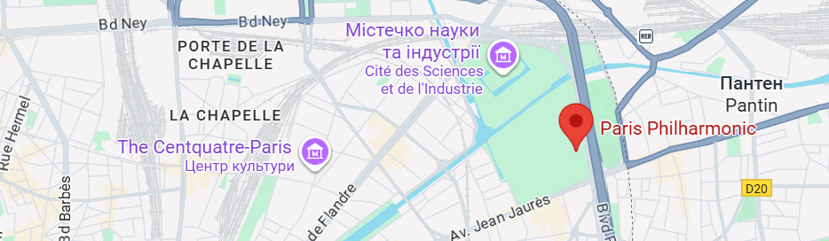

About the Event
Our concert series brings together the finest talents and cultural traditions, creating an evening where art, history, and music unite. Hosted in an atmosphere of timeless elegance, the event is designed for those who value beauty, refinement, and true artistry.
Location
The concert will take place at the Paris Philharmonic, located in the historic center of the city. With its exquisite architecture and exceptional acoustics, the hall offers the perfect setting for an unforgettable musical experience.

Performers
- Elena Moretti (Soprano): Internationally acclaimed soprano known for her breathtaking performances on the world’s greatest stages.
- Alexander Nex (Piano): A virtuoso pianist whose artistry bridges classical tradition and modern interpretation.
- Chamber Ensemble "Armonia": A group of talented musicians bringing life to masterpieces of Mozart and Chopin.